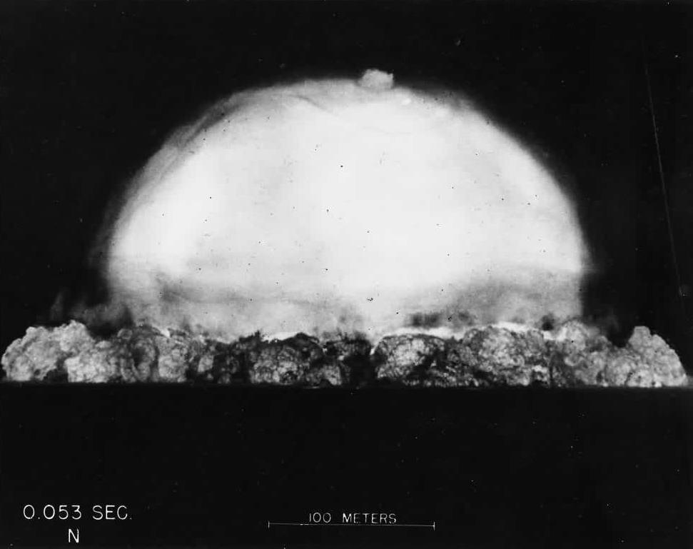
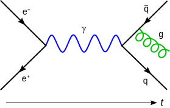

Explain FP like Richard Feynman
Mateusz Kubuszok
Richard Feynman
|
Some serious pics to contrast with Feynman playing a bongo
 |  |
Feynman diagrams

Reviewing student’s books
Type of energy | Description |
Mechanical | the sum of macroscopic translational and rotational kinetic and potential energies |
Electric | potential energy due to or stored in electric fields |
Magnetic | potential energy due to or stored in magnetic fields |
Gravitational | potential energy due to or stored in gravitational fields |
Chemical | potential energy due to chemical bonds |
Ionization | potential energy that binds an electron to its atom or molecule |
Nuclear | potential energy that binds nucleons to form the atomic nucleus (and nuclear reactions) |
Chromodynamic | potential energy that binds quarks to form hadrons |
Elastic | potential energy due to the deformation of a material (or its container) exhibiting a restorative force |
Mechanical wave | kinetic and potential energy in an elastic material due to a propagated deformational wave |
Sound wave | kinetic and potential energy in a fluid due to a sound propagated wave (a particular form of mechanical wave) |
Radiant | potential energy stored in the fields of propagated by electromagnetic radiation, including light |
Rest | potential energy due to an object’s rest mass |
Thermal | kinetic energy of the microscopic motion of particles, a form of disordered equivalent of mechanical energy |
don’t explain things you try to explain using (even indirectly) things you want to explain
abstraction is derived from specifics - not the other way round
Question about magnets
not everyone has a CS background
not everyone has any mathematical background
if we want to teach someone a formal definition, we need to make sure they know the whole foundation they need before - and that takes time to adjust